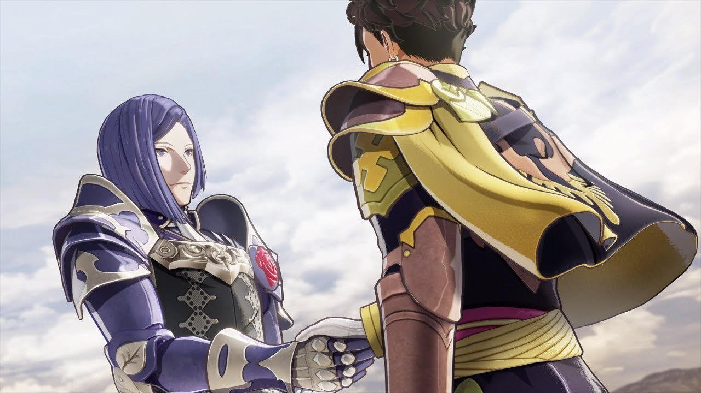
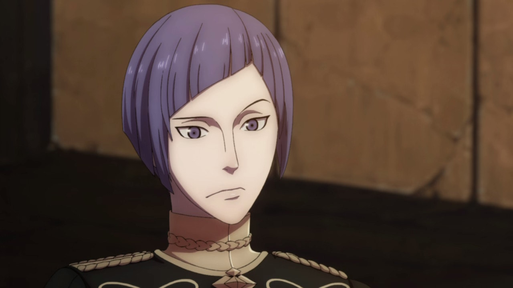

Lorenz is a character from Fire Emblem Three Houses. He is also my favorite character. Lorenz has a deeply interesting story that made me like him as soon as I started playing the game.
He was someone who grew up in the lap of luxury as a powerful noble. He was being groomed to be the head of the oligarchical country he inhabited before that chance was stolen from him by a nobody of dubious origin. Lorenz has to grapple with this new future while also interacting with commoners and learning to respect them as equals to learn how to best lead them and improve their lives once he becomes head of House Gloucester.
Lorenz always puts his foot in his mouth even though he means well. His general social skills are lacking though he is completely unaware of that. This causes him to frequently offend people and leave them with the impression that he is a self important snob that only cares about those of noble status.

"Soon after the war, Lorenz assumed leadership over House Gloucester and helped govern Fódlan as a representative of the old Alliance lords. His political talent yielded revolutionary policy changes, many of which were of particular benefit to the commonfolk."
- Lorenz's Solo Endings (VW, AM, SS)